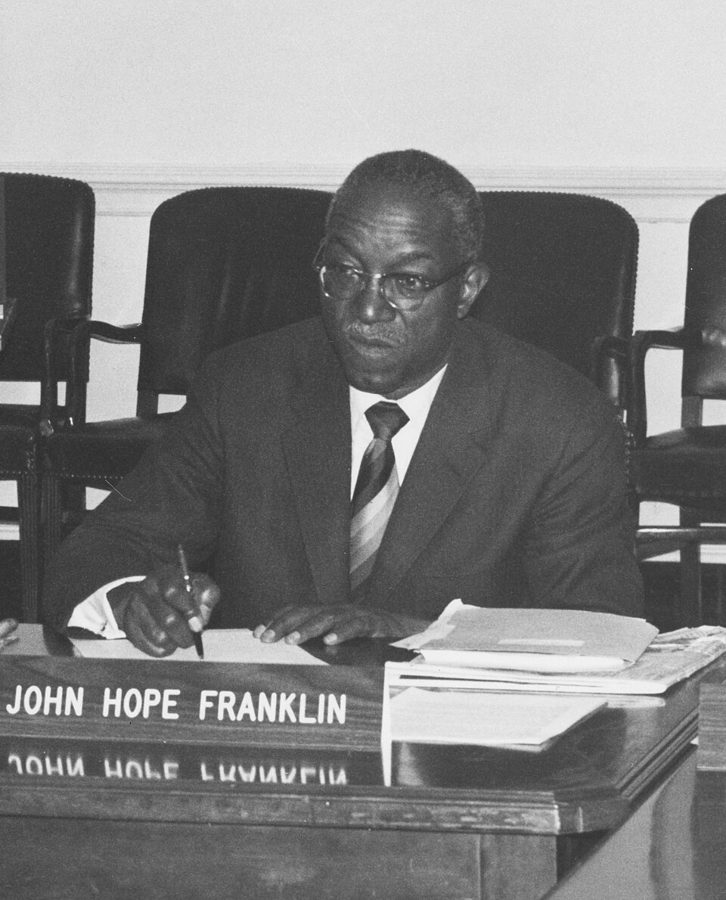
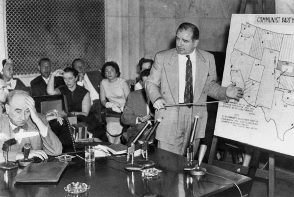

这一页在做什么
四十岁上下。上一页结尾他离开康奈尔去了布兰迪斯；这一页开头，1970 年夏天搬到洛杉矶，进 UCLA，拿到终身教职。十四封信全是他写出去的，没有家信，没有情书：一半绕着他头一篇谈种族的文章，另一半是回绝和反驳，对象有国会议员、名教授和两所名校。
读的时候看他怎么说「不」：对谁客气，对谁不客气。
1970 1971 1972 1973
布兰迪斯
UCLA，洛杉矶
华盛顿
文章见报 地震
Walter Jack Daily Sun 编辑 Woody Frances Porter 教授 Hal Hawkins 议员 Franklin 教授 Hank Pierson 教授
本站示意图。一个圆点是一封信，按信上的日期画。1970 年 12 月到 1971 年 4 月的信挤在一起，多半是那篇文章引出来的；1972 年的四封，三封是在说「不」。文章里摘出来的那一段没有日期，没有画。
UCLA 的 Royce Hall，2019 年拍摄。开头的串场文字说，他 1 月从结冰的麻省飞来做报告，先被洛杉矶的天气打动，然后才是别的。Beyond My Ken，CC BY-SA 4.0，维基共享资源
这个十年开头有七段串场文字，先用一段话给 70 年代定调：60 年代是国家转了向，70 年代是他自己的生活转了向。然后交代他怎么到的 UCLA。这七段是 2007 年的口气，信从第八段才开始。
收信人和提到的人
这一页有十一位收信人，都是他写过去的，没有别人写来的信。十一位里只有 Hal 在 60 年代的信里出现过；Walter 是这个十年的新朋友，往后是常客；其余大多只出现这一次，书里给的介绍就是信前的一句话。
俄勒冈大学 Porter 教授
斯坦福 Hank；他没去的职位
洛杉矶，UCLA 他，1970 年夏起
芝加哥大学 Franklin 教授
伊利诺伊大学 Jack
康奈尔 校报 Daily Sun
布兰迪斯 他，到 1970 年夏
纽约 Hal
Swarthmore Pierson 教授
华盛顿 Hawkins 议员；他，1972 年夏起
本站示意图，只表示大致方位，不按比例。蓝色的两个点是他自己：先在洛杉矶，1972 年夏天向 UCLA 请了假去华盛顿。Walter 1970 年在洛杉矶，1972 年已在华盛顿的 Urban Institute。Woody 和 Frances 当时在哪，书里没说。
Walter Walter Williams · 经济学家 1969 年夏天在 UCLA 认识的朋友，当时一边在本地一所学院教书一边读博士。Walter 受邀在经济学会年会上谈种族，拿不准该不该去，来问他。全书往后常出现。
Jack Jack Wolfowitz · 康奈尔的旧同事 1969 年的事以后离开康奈尔的教员之一，这时在伊利诺伊大学。这一页有两封：1970 年 12 月那封报告文章的反响，1971 年 3 月那封谈一本打算写的书。第二封前面的串场只说是一位白人旧同事，本站按同一位 Jack 读。
the Editor Cornell Daily Sun · 康奈尔的学生报纸 不是私人信，是投给报纸要它登出来的。称呼是 To the Editor，读者来信都这么起头。
Woody Heywood Fleisig · 康奈尔的另一位旧同事 两封都只印了一段，都是说近况的闲话：一封讲地震，一封讲换工作。口气最放松。
Professor Porter 俄勒冈大学的教授 · 书里只给了姓 来信讲本校一位教员被黑人学生集体抵制。他回信说，自己在 Howard 教书时碰到过同一类事。
Frances Howard 的旧学生 · 书里只有名 七年前在他两门课上都名列前茅，来信请他写推荐信，又怕麻烦他。回信只有两句，是玩笑的口气。
Hal 化名 · 纽约一所学院的左派教授 他在 Douglass 教书时认识的朋友，60 年代的信里出现过。这里只印了一段，争的是：生活必需品该不该让人赚钱。
Congressman Hawkins Augustus Hawkins · 国会众议员 洛杉矶选出的黑人民主党议员，来信问他对「充分就业」的看法。他回了一段带数字的话，此后再没收到回音。
Professor Franklin John Hope Franklin · 芝加哥大学的历史学家 他想办一所高水平的黑人学术机构，Franklin 不肯支持，这件事就此作罢。这封是回 Franklin 那封拒绝信的。
Hank 斯坦福行政部门的黑人朋友 · 书里只有名 斯坦福请他去做两年客座教授，他回绝了，事后写信向 Hank 解释原因。
Professor Pierson Swarthmore 学院经济系主任 · 书里只给了姓 一位劳动经济学家，寄来一封油印的信，说学院正在找一位黑人经济学家。这一页最长、火气最大的一封信是回这个的。
Bill Allen 只被提到 · UCLA 的经济学教授 和他同行，都研究经济思想史。当系主任时拒绝按族裔比例聘人。给 Pierson 的信拿这件事当正面的例子。
Walter Williams，2013 年在得克萨斯理工大学演讲。这一页里的 Walter 三十四五岁，博士还没读完。Free Market Institute at Texas Tech University，CC BY 3.0，维基共享资源 Frances 不是姐姐。 他的亲姐姐叫 Mary Frances，信里称 Mary 或 Sis。这一页的 Frances 是 Howard 的学生，信后面那句串场说得很清楚。
顺口提到、书里没有介绍的人。 Jean 是他妻子，60 年代末的信里出现过；给 Walter 的信里那个刚出生的女儿，这本书没给名字。Gloria 和 Rodney 是老朋友夫妇，Gloria 就是 60 年代第一页里读医的那位。给 Jack 的第二封信里的 Turner 只有姓，Chandler Morse 有全名但没有介绍，从上下文看都是康奈尔的人，本站不补。信里那个「昂然告诉我」的人、那位挨过打的朋友，都没有名字。
信件地图
一条是一封信。斜体字是那封信正文开头的几个词，照这一版屏幕上的字抄的，在 Kindle 里搜它就能跳过去。编号是黄底的，是别人写来的信；这一页没有。「留意」只给方向，答案在信里。有一条不是信，是他从自己那篇文章里摘的一段。
My apologies for the delay in 1970 年 6 月 12 日 · 写给 Walter 留意：他劝 Walter 去还是不去；理由里有一条和 Walter 说什么内容无关。The general response to the article 1970 年 12 月 21 日 · 写给 Jack 留意：他特意数了头几个回应的人是谁；最后那句引号里的话是谁说的。When the failures of many programs 没有日期 · 文章里的一段，不是信 留意：他预言人们会得出哪个结论，他认为该得出的是哪个。The vehement reactions at Cornell to 1971 年 1 月 1 日 · 写给 Cornell Daily Sun 的编辑 留意：文章点了康奈尔的名吗；侦探小说的比方在说谁。After the earthquake of a couple 1971 年 2 月 24 日 · 写给 Woody 留意：同事那句俏皮话的双关在哪个词上；信后面那一段是谁、什么时候说的。Thanks for your comments on my 1971 年 3 月 29 日 · 写给 Jack 留意：他把两种人归到了一起；讲天才学生的那段，他怎么说自己躲过去的。The attempt to “whitelist” instructors is 1971 年 4 月 19 日 · 写给 Professor Porter 留意：当年抵制他的是哪一群学生，因为他说了哪句话。Writing letters of recommendation is one 1971 年 3 月 14 日 · 写给 Frances 留意：日期比上一封早。他拿哪两件事和写推荐信相比。Regarding our political differences, I am 1971 年 9 月 14 日 · 写给 Hal 留意：exorbitant 为什么加引号；最后一句他是在挖苦，还是当真。While I have been very much 1972 年 1 月 4 日 · 写给 Congressman Hawkins 留意：两组年龄的失业率各是多少；他由此说这不是哪一类问题。Although I had hoped to see 1972 年 3 月 7 日 · 写给 Professor Franklin 留意：被拒绝之后他的心情分两步；那天他去了哪里。Despite a very attractive offer from 1972 年 3 月 19 日 · 写给 Hank 留意：让他不安的不是危险，是什么；括号里那句话在说谁。I have taken leave from UCLA 1972 年 7 月 13 日 · 写给 Woody 留意：他从前拿什么自夸；us amateurs 是自谦吗。This morning I was pleased to 1972 年 9 月 18 日 · 写给 Professor Pierson 留意：头一句的高兴维持到哪；他给了几条理由，哪一条讲的是供给和需求。
背景：作者默认你知道的事
头一篇谈种族的文章
1970 年 12 月 13 日登在《纽约时报杂志》（周日随报附送的那本杂志）上，讲各大学招收和对待黑人学生的做法。Odyssey 伴读讲过它的主张：他反对放着成绩好的黑人学生不要，去挑合乎某种社会学形象的。
这一页前半的信多半是它引出来的。1972 年出的 Black Education: Myths and Tragedies 就是从这篇文章长出来的，给 Jack 的第二封信里说的「正在计划的书」是它。
1971 年 2 月 9 日的地震
1971 年圣费尔南多地震后的 Newhall Pass 立交，当时还在施工。NOAA/NGDC, E.V. Leyendecker, U.S. Geological Survey，公有领域，维基共享资源
震中在洛杉矶北面的圣费尔南多谷，清晨六点，震级 6.6 上下，死了六十人上下，倒了两所医院的楼和几座高速公路桥。他搬来才半年。
信里写的是余震和同事的俏皮话。信后面紧跟的那一段讲建筑抗震、讲财富和安全，没有信的标记，是 2007 年的话。
Hawkins 和「充分就业」
Augustus Hawkins 的国会肖像，拍摄年份图片说明里没写。U.S. Congress，公有领域，维基共享资源
Augustus Hawkins 1963 年起代表洛杉矶的选区当众议员，一直当到 1991 年。full employment 是当时民主党的一面旗：失业是总需求不够，政府该出手把就业托上去。1978 年的《充分就业与平衡增长法》通称 Humphrey–Hawkins 法，后一个名字就是他。
所以他来问一位经济学家怎么看。回信没有顺着这个思路答。
黑人男性的失业率，按信里给的数字
35–44 岁
不到 4%（1967–1970 年每年）
16–17 岁
25%–30% 以上
0 10% 20% 30%
他的推理：要是毛病出在总需求，两条都该长。现在只有一条长。
本站示意图，数字出自 1972 年 1 月 4 日的信，是他手头的统计，本站没有另外核对。浅色的一截表示「到 30% 以上」。为什么偏偏是十几岁的人，信里没说；后面的串场文字给了他的答案：最低工资法。那是 2007 年补的话。
John Hope Franklin

John Hope Franklin 在美国国家档案馆顾问委员会的会议上，拍摄年份图片说明里没写。作者不详，公有领域，维基共享资源 当时最有声望的黑人历史学家，1947 年出的 From Slavery to Freedom 是美国黑人史的标准教科书，1964 年起在芝加哥大学任教。
串场文字说，办那所机构的事本来就希望不大，只有这样分量的人出面才救得活。Franklin 为什么不支持，书里没有印来信，也没有说。
affirmative action 和联邦的钱
从这几年起，这个词成了他信里的常客。1965 年的总统行政令要求和联邦政府有合同的机构采取「积极行动」保证不歧视；1971 年劳工部的新规定进一步要它们订出雇用少数族裔和妇女的目标和时间表。大学拿着联邦的研究合同，也在其中，由卫生教育福利部来查。
给 Pierson 的信说各校这样找人是为了保住联邦的钱，指的是这个。主张这项政策的人看重的是：不主动去找，教员队伍不会自己变。
「先生，你还知不知羞」

1954 年陆军诉 McCarthy 听证会。站着的是参议员 Joseph McCarthy，左边托着头的是陆军的律师 Joseph Welch。United States Senate，公有领域，维基共享资源 1950 年代初，参议员 McCarthy 到处指控政府里藏着共产党人。1954 年 6 月的电视直播听证会上，他当众点了对方律师手下一个年轻人的名，律师 Joseph Welch 回了一句，McCarthy 的声势此后很快垮了。
通行的记录是 Have you no sense of decency, sir? 。信里凭记忆引成了另一个样子，还把 Welch 说成证人。他拿这句话回敬 Swarthmore。
Odyssey 里讲过这一段
这三年在回忆录第 9 章的前半，最后两封信搭到后半的开头。回忆录这几年写了不少家里的事，信里几乎没有；信里的几位收信人，回忆录又大多没提。
UCLA 的那场报告 Odyssey 第 9 章（上） 两本书讲的是同一个场面，对话几乎一样。回忆录说那位女士打电话给系里一位资深教授，这里说是系主任。Walter 夫妇在公寓里办的聚会、Walter 来问年会的事，是这里才有的。
去那一页 → 文章和康奈尔的反应 Odyssey 第 9 章（上） 回忆录概括了来信的情形和校报上的攻击，还讲了攻击怎么收的场：两位招生委员会的人写信证实了他的话。这里没有收场，多的是原件：给 Jack 的信里一个个数出来的回应者，文章里那段预言，和他投给校报的信。
去那一页 → 斯坦福的午餐 Odyssey 第 9 章（上） 教员俱乐部里那一幕，回忆录写得细：扩音喇叭，讨价还价，他问教员的那句话。信里只有一个词组带过，多的是打完一圈电话以后的理由，和一句自述：他在布兰迪斯、在康奈尔都没闭过嘴。
去那一页 → 去 Urban Institute Odyssey 第 9 章（下） 回忆录讲了为什么选它不选 Rand，还有那年他在初选和大选里怎么投的票。给 Woody 的信只有两句，但「我们这些外行」的说法是当时的原话。
去那一页 → Hawkins、Franklin、Swarthmore 回忆录没写 这三封信和它们背后的事，回忆录都没提，包括他花了几年想办一所黑人学术机构这件事。反过来，回忆录里 Howard 两次请他回去当系主任、他给 Birdie 打的那个电话，这一页的信里没有。
Hal 和 Al。 回忆录里有一位 my radical friend Al，从第 6 章起出现，第 9 章里打电话来说那篇文章说对了。这本书里的 my radical friend 叫 Hal，而且明说是化名。两个名字是不是同一个人，两本书都没说，本站不裁决。
这一版的错字
只收会让人读不懂、或者在 Kindle 里搜不到的。第一格是屏幕上的字，照抄的；第二格是本站有把握的原字。问号前多出来的撇号全书都有，见「开读之前」，这里不列。
屏幕上的字 应为 在哪 colleagues at U('LA encouraged colleagues at UCLA encouraged 第 2 封信前面的串场。大写的 C 常被认成 ('，后面还有 Jack Wolt'owitz Jack Wolfowitz 同一段。搜 Wolfowitz 搜不到。同一句里的 of 也都多了撇号 (12/14) 1 received (12/14) I received 1970 年 12 月给 Jack 的信。I 认成了数字 1 Cornell Darfv Sun Cornell Daily Sun 给校报的信后面的串场 another loaner Cornell colleague another former Cornell colleague 介绍 Woody 的那句串场 ('alitomians are able Californians are able 地震那封信后面的串场，段首 creation ot'wealth has proven to he creation of wealth has proven to be 同一段的末一句。这一句里还有两处同样的毛病 A white fanner colleague A white former colleague 1971 年 3 月给 Jack 的信前面的串场 summer program fbr black students summer program for black students 给 Franklin 的信前面的串场 a similar lceling ofrelief a similar feeling of relief 给 Franklin 的信后面那句讲保龄球的串场 rather attractive otter of rather attractive offer of 讲斯坦福的那段串场。段末还有一处 turned down the otter ample time lets tier research ample time left for research 同一段：半时教课、全薪，余下的时间做研究
没有标记的段落。 这一页没有做成图片的脚注或信头。要小心的是另一件事：第 1 封和第 5 封信后面紧跟的段落（讲文章怎么写出来的那段，讲加州人为什么不怕地震的那段）排版上和信连着，其实是 2007 年的串场。破折号在这几页里有三种印法：一个短横、两个短横、三个短横，都当破折号读。
词与短语
按信的顺序排，串场文字里的词条归到它后面那封信的组里。斜体小字是那句话里的几个词，照这一版屏幕上的字抄的（撇号是直的），在 Kindle 里搜它就能跳到那一句。单个的生词长按就能查，这里收的主要是词典帮不上忙的。
1970 年 6 月 · 给 Walter
phalanx
… With its phalanx of University of …
一大帮，阵容整齐的一群
古希腊步兵的方阵。说 UCLA 经济系里芝加哥出身的人成排成列。
give a paper
… invited to give a paper at UCLA …
去做一场学术报告
学术圈行话，paper 是论文。请外校的人来 give a paper，常常就是面试。
kindred souls
… UCLA had more kindred souls, including Bill …
同道中人
kindred 是同类的。回忆录写同一件事用的也是这个词。
look someone up
… he had looked me up because someone …
专门找上门来
不是查资料。到了某地去找一个听说过的人。
rough-and-tumble
… shocked by the rough-and-tumble style of debate …
不讲客气、拳拳到肉的
本来说打架打成一团。芝加哥出身的经济学家开讨论会是出名的凶。
that was their business
… that was their business but that she …
那是他们自己的事
business 是「分内的事」，和生意无关。她以为这场围攻是不想要他。
with tenure
… an associate professor with tenure, which I …
带终身教职的
Odyssey 伴读讲过。副教授一进门就给 tenure 不常见，所以他说 unusual。
part company
… regret at parting company with them. …
分手，各走各的
company 是「做伴」。他说这是头一回离开一所学校时舍不得同事。
bona fide
… offer was a bona fide one that …
真心实意的
拉丁文「出于善意」。问的是：请我是真想听我说，还是另有用处。
token black
… used as a token black and being …
摆样子的黑人
token 是象征性的一个。台上需要一张黑面孔，于是找一个来。这个词组往后几十年的信里反复出现。
blandly accepted
… disruption was so blandly accepted-but against this …
就那么若无其事地认了
bland 是淡而无味。上一年年会被人搅场，学会没当回事。搅场的经过信里没讲。
against this must be weighed
… against this must be weighed the opportunity …
另一头要掂量的是
倒装。主语是后面那一长串 the opportunity to…。天平的一头是难堪，一头是机会。
talk sense
… sit there and talk sense should have …
说在理的话
sense 是道理。同一句里的 sanity、rationality 都是这个意思，他一口气用了三个。
guilty white liberals
… of the guilty white liberals, who need …
满心负疚的白人自由派
guilty 这里是「觉得自己有罪」，不是真犯了罪。他认为这些人因为负疚而不敢讲理。这是他的说法，带贬义。
militant types
… some black militant types sitting down front …
激进派模样的人
militant 在 60 年代末专指主张对抗的黑人激进分子。加个 types 是「那一路的」，不太客气。
1970 年 12 月 · 给 Jack，和文章里的一段
faculty exodus
… a widespread faculty exodus after the …
教员成批出走
exodus 是《出埃及记》的那个词。
guns-on-campus crisis
… after the guns-on-campus crisis of 1969. …
持枪进校园的那场风波
1969 年 4 月康奈尔的事，Odyssey 第 8 章和上一页讲过。
as the most vain man could desire
… as the most vain man could desire. …
最爱虚荣的人也该知足了
自嘲着报喜。vain 是爱听好话的。
a Negro schoolteacher
… a telegram from a Negro schoolteacher in …
一位黑人教师
同一句里前后都是 black，中间夹了一个 Negro。1970 年正是两个词换班的时候，他自己也混着用。
in many quarters
… be drawn in many quarters will not …
在不少地方、不少人那里
quarter 是「方面、圈子」，不是四分之一。
euphemisms and apologetics
… hide under euphemisms and apologetics, the …
委婉的说法和辩护的说辞
apologetics 本是神学里的「护教学」，和道歉无关。
half-baked schemes
… these were half-baked schemes, but that …
没想清楚就上马的方案
烤到一半的面包。
just don't have it
… black people just don't have it. …
压根就不是那块料
it 指天分、本事。这不是他的看法，是他预言别人会得出的结论，他写文章正是要拦这个。
1971 年 1 月 · 给 Cornell Daily Sun
a dead giveaway
… ludicrous and a dead giveaway was that …
一下子就露了馅
giveaway 是泄底的东西，dead 加强语气。
protest too much
… the woman who protested too much. The …
辩白得太起劲
《哈姆雷特》第三幕，王后看戏时说戏里那位夫人「誓发得太重了」。现在的用法：越否认越可疑。
charge
… which was not charged in the …
指控
熟词生义。文章并没有指控这些事出在康奈尔。
the suspect who denies
… is the suspect who denies having stabbed …
抢着否认的嫌疑人
还没人说死者是怎么死的，他先说「不是我捅的」。和上面《哈姆雷特》的典故是一个意思，说了两遍。
semi-literate
… was a semi-literate letter to the Cornell …
文理半通的
一封错字连篇的信，内容是保证学术水准没有降。回忆录也用了这个词。
You had to laugh or cry
… You had to laugh or cry---or perhaps both. …
叫人哭笑不得
you 是泛指。三个短横是破折号。
1971 年 2 月 · 给 Woody
in their own right
… respectable earthquakes in their own right. I …
单拿出来也算得上
respectable 是「像样的」。余震本身就够得上一场地震。
insensitivity
… is another example of my insensitivity. Some …
迟钝；不体贴
两个意思都用上了：对地震没感觉，对人也没感觉。说这话的 Jean 是他妻子。
blase
… have gotten equally blase about them. …
见怪不怪
法语来的 blasé，这一版丢了 e 上的那一撇。
observed drily
… and a colleague observed drily, …
不动声色地说了一句
observe 是「说」，不是观察。dry 说幽默，是板着脸讲笑话。
earth-shaking
… seem like an earth-shaking statement to …
惊天动地的
双关。平时是比喻，这回楼真的晃了。
safety advocates
… so than safety advocates or safety laws, …
鼓吹安全立法的人
这一段是 2007 年的话。他的论点：让人富起来比立法更能保命，因为抗震的房子要钱。
1971 年 3 月 · 给 Jack
scratch A and you'll find B
… scratch an ultra-liberal and you'll find a …
刮开 A 的皮，底下是 B
套用老话 Scratch a Russian and you find a Tartar 。bigot 是有偏见的人。这是他听了 Jack 转述之后的气话，不是论证。
write off
… not also written off black people's potential …
当作坏账勾销
会计用语。他怀疑有些激进派其实也不信黑人学得好，所以才要找别的东西来替代成绩。
harness
… trying to harness for his own purposes, …
驾驭，拿来为己所用
给马套上挽具。想驾驭一股不讲理的情绪，结果自己被它掀翻。说的是谁，信里没点名。
go down the drain
… talent will go down the drain. …
白白糟蹋掉
顺着下水道流走。
idle boast
… not making an idle boast when he …
空口吹牛
idle 是「没有根据的」。他的意思是 Turner 说的恐怕是实情。
veto appointments
… black studies people vetoing appointments of black …
否决聘任
black studies 是 60 年代末各校新设的黑人研究专业。信里说它的人能拦下别的系聘黑人教员。这是他一方的说法。
make something moot
… the preceding August made this moot …
使它不必再议
moot 在美国是「已无实际意义」。方括号里是编书时加的：他前一年 8 月已经辞职，「Sowell 必须走」也就不用提了。
gifted
… dissertation on gifted black students. The …
天资高的
美国教育界的术语，指智商测验分数高的孩子。
run the gauntlet
… manage to run the gauntlet and emerge …
闯过夹道的棍棒
旧时军队的一种刑罚：从两排人中间跑过去，两边的人拿棍子打。引申为顶着四面的攻击走过来。
a foretaste of
… was a foretaste of what would become …
……的前兆
先尝到的一口。这一句是 2007 年的话。
acting white
… would be accused of “acting white.” …
「装白人」
黑人学生嘲笑用功的同学的话：好好念书就是学白人。80 年代以后才流行，1971 年的信里没有这个词。
1971 年 4 月 · 给 Professor Porter
whitelist
… He was blacklisted by them or-as they …
列入「白名单」
和程序员说的白名单正相反。学生把 blacklist 的 black 换成 white，意思还是拉黑，只是不肯让 black 当坏词。
all too
… is all too painfully reminiscent of my …
实在太
all too 加形容词或副词，表示「多到让人不舒服」。
pampered
… sizeable and pampered foreign student contingent, …
被惯坏了的
contingent 是一批人。Howard 有不少非洲和加勒比来的学生，Odyssey 第 6 章讲过这场抵制。
hold to the same standards
… be held to the same standards. In …
用同一把尺子要求
hold someone to 是要某人做到。就是这句话被说成「反外国学生」。
1971 年 3 月 · 给 Frances
letters of reference
… ask for letters of reference, some of …
推荐信
信里叫 letters of recommendation，是一回事。美国申请学校和工作都要老师写，学生毕业多年还会回来要。
sharpening pencils
… more interesting than sharpening pencils and less …
削铅笔
把写推荐信排在削铅笔和掸粉笔灰之间，是故意往小里说，好让对方放心再来要。
torn between
… being torn between honesty and compassion. …
在两头之间为难
给差学生写推荐信：说实话还是手下留情。这句等于说 Frances 是好学生。
1971 年 9 月 · 给 Hal
joust
… I occasionally jousted over our ideological …
交手，过招
中世纪骑士骑马持矛对冲。有比试的意思，没有翻脸的意思。
I am afraid that
… I am afraid that there is …
恕我直言
不是害怕。说不中听的话之前垫的一句。
breath-taking disproportion
… is a breath-taking disproportion between the …
悬殊得惊人
不相称的两头：分析资本主义花的功夫，和要打倒它花的力气。
structure of incentives
… that the structure of incentives be such …
激励的结构
经济学的行话：一套安排让人做什么有好处、做什么吃亏。他后来的书里到处是这个词。
be such as to
… incentives be such as to cause it …
应当是这样的，以致……
be 是原形，因为前面是 it is important that，后面用虚拟式。
ghetto kids
… made by educating ghetto kids. There would …
贫民区的孩子
ghetto 这时指大城市里黑人聚居的穷街区，比如他长大的 Harlem。
more than we would know what to do with
… than we would know what to do …
多得用不完
口语里说「多到不知拿它怎么办」。
1972 年 1 月 · 给 Congressman Hawkins
solicit
… liberal Democrat, soliciting my views on issues …
征求
正式用语。同一句的 liberal 是美国的用法，指偏左。
aggregate demand
… be remedied by more aggregate demand-but that …
总需求
宏观经济学的术语：全社会的总支出。凯恩斯一派认为失业是它不足，政府多花钱就能补上。
price out of jobs
… laws price inexperienced and unskilled workers …
把价定得太高，以致没人雇
price 作动词。price someone out of 是因为定价把人挤出去。这是 2007 年的话，也是他一贯的论点。
1972 年 3 月 · 给 Professor Franklin
a long shot
… idea was a long shot, so that …
希望渺茫的事
远距离射击，难中。
go into limbo
… the idea now went into limbo-never to …
被搁置起来，没了下文
limbo 是天主教说的地狱边缘：不上不下的地方。
at this stage of my own development
… at this stage of my own development. …
在我自己眼下这个阶段
他四十一岁。意思是自己的学问还没立住，背不动一所机构。
In all frankness
… In all frankness, my initial disappointment …
说句老实话
书信套话。后面跟的是真话：失望之后马上是松了一口气。
index
… One index of my relief was …
指标
不是索引。
bowl a score
… and bowled my highest score in years …
打出（保龄球的）分数
保龄球一局满分 300，要连续十二个全中。268 是很高的分。给一位名教授的公事信里写这个，是告诉对方：我真的不怪您。
1972 年 3 月 · 给 Hank
toe the line
… to either toe the line on issues …
照别人划的线站队
起跑时脚尖抵着线。
maintain a discreet silence
… least maintain a discreet silence. The …
识趣地不作声
discreet 是谨慎、知道什么不该说。别和 discrete（离散的）混。
a situation
… worth being in the middle of …
「局面」
原文加了引号。往轻里说的词：大家都知道指什么麻烦，谁也不明说。
circumspection
… would have sufficient circumspection not to …
瞻前顾后的谨慎
字面是「四下看看」。这封信的关键词，后面又出现一次。
self-righteous messiahs
… an antagonist to self-righteous messiahs (at …
自以为是的救世主
说校园里的激进派。括号里补了一刀：跟他通电话的人里就有一个是。
have been a few places
… might have been a few places myself, …
也算见过些世面
往轻里说。对方说哪儿都一样，他的意思是：我待过的学校不比你们少。
a little late in the day
… is a little late in the day …
现在才来学，晚了点
day 不是指当天，是指人生或事情的进程。正话反说：我不打算学。
supineness
… disruptions and the supineness with which …
逆来顺受
supine 是仰面躺着。回忆录写同一幕用的是副词 supinely。
pre-emptive surrender
… turmoil of' the 1960s-pre-emptive surrender. …
抢先投降
仿 pre-emptive strike （先发制人的打击）造的。peace 加了引号：他认为那不算和平。这是 2007 年的话。
1972 年 7 月 · 给 Woody
think tanks
… I explored were think tanks, including the …
智库
不教书、只做研究的机构。Rand Corporation 在洛杉矶边上的 Santa Monica，Urban Institute 在华盛顿，1968 年成立，研究城市和社会政策。
take leave
… I could take leave to go work …
请长假，保留职位离校
leave 是 leave of absence。有 tenure 的教授可以离校一两年再回来，位置给留着。
head up
… UCLA to go head up a research …
主持，牵头
head 作动词。go head up 是口语，go 后面直接跟动词原形。
get into the act
… us amateurs to get into the act and …
也来插一手
act 是台上的节目。自称 amateurs 是反话：他看过专家们的成绩了。
1972 年 9 月 · 给 Professor Pierson
sign of the times
… one more sad sign of the times and …
世风如此的又一个例子
固定说法，多半是叹气时用。
be abroad
… kind of emotionalism was abroad, and a …
四处流行
不是在国外。旧用法：某种情绪、谣言在外面传开了。他把眼下的风气和当年的恐共并排，说两样都是情绪用事。
broadcast
… black faculty members with broadcast recruiting campaigns …
撒大网式的
本义是撒种。说的是不看对象、人手一份。
mimeographed
… note the letter is mimeographed). Maybe …
油印的
复印机普及以前的土办法：刻蜡纸，上油墨，一印几百份。信是油印的，就说明同一封信发给了很多人。
violently
… at U.C.L.A. he violently refused to hire …
激烈地，坚决地
没有动手。上一页结尾的串场文字讲过这件事的背景。
with my head held up
… a year later with my head held …
抬着头
因为 Allen 不按肤色聘人，他进 UCLA 时没人能说他是凑数的。
throw open to
… and thereby throws it open to opportunists. …
向……敞开大门
他的推理：这种招法让有自尊的人不肯来，来的就只剩钻营的人。
brave talk
… Despite all the brave talk in academia …
说得漂亮的大话
brave 这里是反话，指嘴上硬气。
breed contempt
… familiar with it as to breed contempt. …
生出轻视
拆了一句谚语 Familiarity breeds contempt （太熟了就不当回事）。他说自己和钱还没熟到那个地步。
second thoughts
… wavering and having second thoughts about this …
反悔的念头
不是「第二个想法」。have second thoughts 是开始动摇。
coin a term
… eventually a new term was coined: …
造一个新词
coin 是铸币。后面的 the new racism 是 2007 年串场里的话。
值得停下来的句子
… the more essential something is the more important it is that the structure of incentives be such as to cause it to be produced …— 1971 年 9 月 14 日给 Hal 的信。本站译：一样东西越是少不得，就越要让激励的安排能促使人把它造出来……
骨架是 the more … the more … 。第二个 the more 后面套了一个 it is important that … be … ，be 是虚拟式；such as to cause 是「要做到能促使」。句子后面还有半截：大量地、低成本地。
Hal 的前提是必需品不该让人赚钱。他把这个前提倒了过来，接着举的例子是教育：要是教贫民区的孩子能赚大钱，Harlem 的学校会出很多天才。那是当真的话。本站的看法：先问激励、不问用心，这是他后来几本书的底子，这里是早期的一次直说。
Now, I have nothing against money. I have not been so familiar with it as to breed contempt.— 1972 年 9 月 18 日给 Professor Pierson 的信。本站译：我可不是跟钱过不去。我和它还没熟到会瞧不起它的地步。
第二句把谚语 Familiarity breeds contempt 拆开用：so familiar … as to 是「熟到……的程度」。字面在说自己没怎么见过钱。
全信火气最大的一段里，他在这里停下来开了个玩笑，然后才说：为了钱能做的事是有限度的。停在这里，是因为它让人看出这封信的写法：指责很重，但他先把「我清高」这条退路堵上了。
检查一下理解
先在心里答，再点开。答错的那题，回书里把那封信再读一遍。
1. 给 Walter 的信里，他劝 Walter 去年会上发言。他认为那会是个轻松的场合吗？ 不认为。他先承认场面可能难堪，上一年的会就被人搅过。他说的是另一头更重：有人坐在台上讲理，这件事本身就有用。他还拿自己去年秋天的一次演讲作例子，台下起初也是一脸不屑。
2. 他那篇文章说了某些事发生在康奈尔吗？康奈尔的人为什么要否认？ 文章没说。那几件事没有写地点。康奈尔的人却抢着声明不是我们这儿的事，他在给校报的信里说，这比文章本身更能说明问题，就像还没人说凶器是什么，嫌疑人先否认动过刀。
3. 地震那封信后面，讲穷国的地震死人多、讲财富能保命的那一段，是 1971 年写给 Woody 的吗？ 不是。给 Woody 的信只印了一段，到同事那句俏皮话为止。后面那段是 2007 年的串场文字，只是排在信后面，没有另起日期。
4. 他对 Hal 说，最想看到有人靠教贫民区的孩子赚到「暴利」。这是挖苦吗？ 不是挖苦，是当真的。Hal 认为必需品不该让人赚钱；他认为越要紧的东西越该让人有利可图，这样才会有人大量去做。exorbitant 加引号，是借用对方嘴里的贬义词。
5. Franklin 教授拒绝支持他的计划以后，他是什么心情？保龄球是怎么回事？ 先失望，紧接着是松了一口气：这件事对当时的他是很重的担子，现在不用再扛了。他当天去打保龄球，打出几年来的最高分，拿这个当证据告诉对方自己有多轻松。
6. 给 Pierson 的信，是在反对 Swarthmore 聘黑人教员吗？ 他反对的是找法：按肤色找，用油印信到处发。信里的理由有三层：好的教员不是这样找来的；合格的人短期内不会变多，硬要增加只能降低标准，结果让「黑人」等于「不合格」；学校这样做是为了保住联邦的钱。支持这项政策的人不同意这些判断，信里没有印对方的回答。